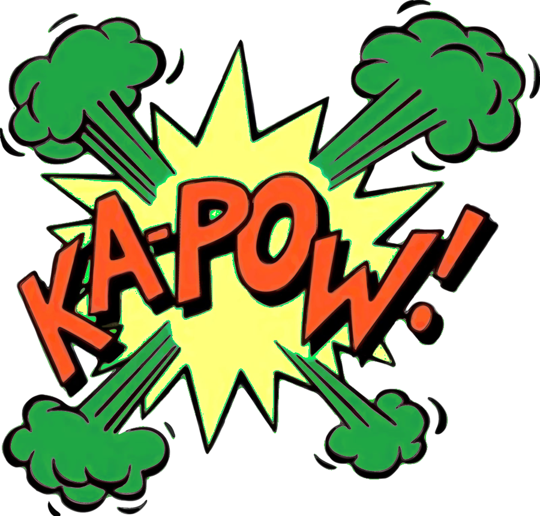

El Pop Art nació en Inglaterra a mediados de los años 50, en un contexto donde la publicidad, el cine y los productos de consumo empezaban a dominar la vida cotidiana. Fue una reacción frente al arte abstracto y serio de la época: en lugar de rechazar la cultura de masas, la transformó en arte.
Uno de los pioneros fue Richard Hamilton, con su collage “Just what is it that makes today’s homes so different, so appealing?” (1956), considerado la primera obra pop. Poco después, el movimiento explotó en Estados Unidos, donde encontró su mayor fuerza y visibilidad.
En los años 60, artistas como Andy Warhol y Roy Lichtenstein convirtieron imágenes populares como Marilyn Monroe y las Sopas Campbell en íconos artísticos.
El Pop Art cambió para siempre la idea de arte: borró la línea entre lo “alto” y lo “popular”, y demostró que un envase de supermercado o una viñeta de cómic podían ser tan valiosos como un cuadro clásico. Su estética colorida, directa y vibrante todavía inspira el diseño, la moda y la cultura actual.
